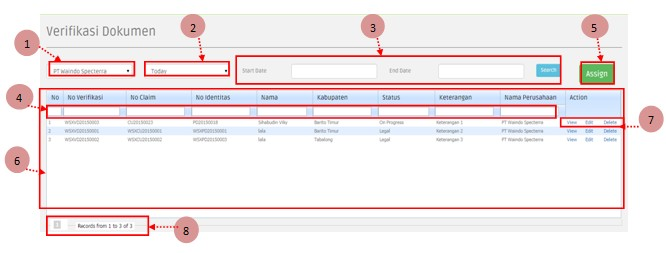
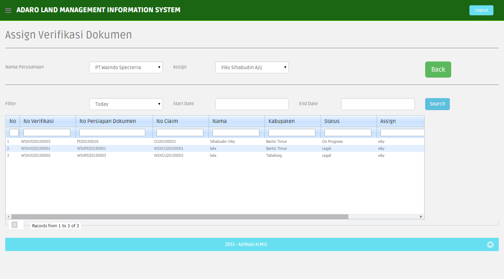
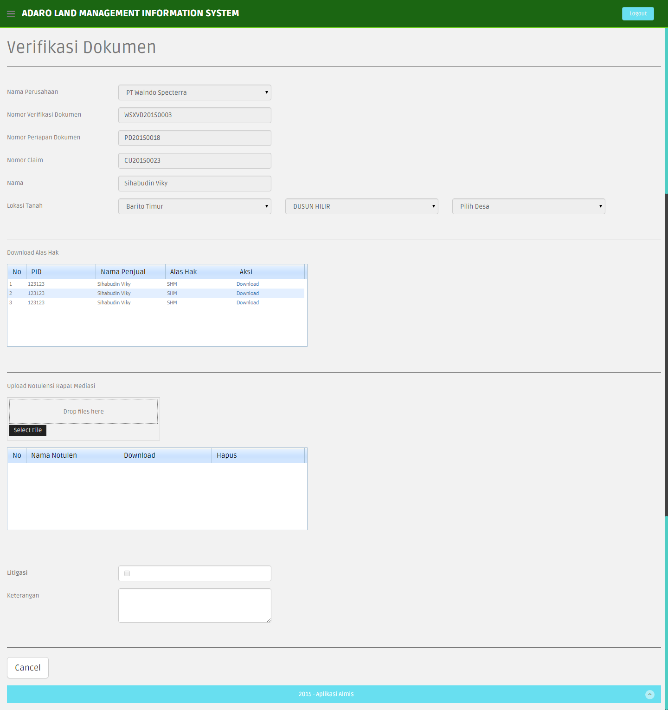
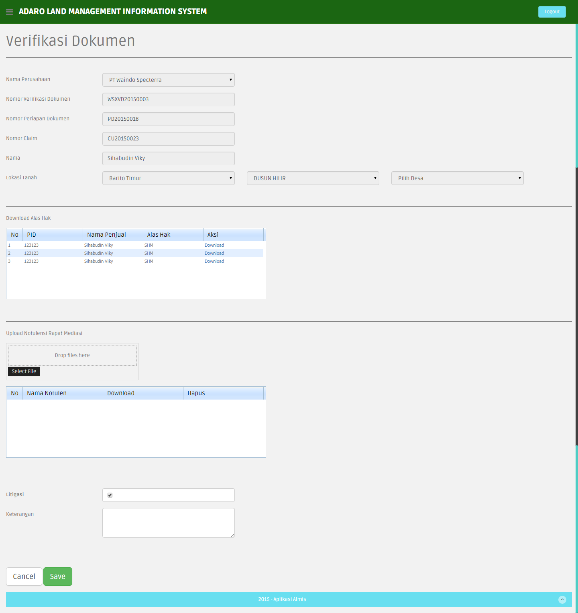
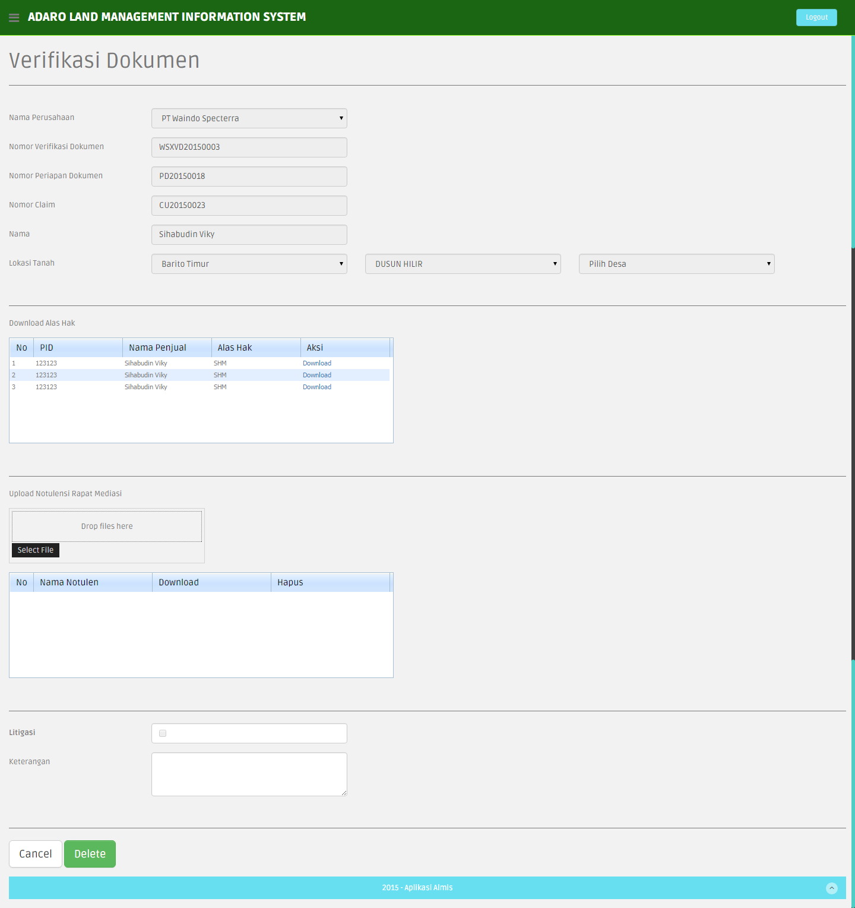

3.6.2 Verifikasi Dokumen
Untuk menuju ke halaman Verifikasi Dokumen, tahapan yang dilakukan adalah sebagai berikut:
- Klik menu Land Litigation > Verifikasi Dokumen
- Akan tampil halaman Verifikasi Dokumen seperti gambar berikut

Keterangan halaman halaman Verifikasi Dokumen:
- User melakukan pencarian data List Verifikasi Dokumen berdasarkan pada list drop down nama perusahaan.
- Pilih salah satu dari list dropdown nama perusahaan.
- maka akan ditampilkan list Verifikasi Dokumen berdasarkan perusahaan yang dipilih
2. User melakukan pencarian data List Verifikasi Dokumen berdasarkan periode pada list drop down.
- Pilih salah satu dari list dropdown periode.
- maka akan ditampilkan list Verifikasi Dokumen berdasarkan periode yang dipilih
3. User melakukan pencarian data List Verifikasi Dokumen berdasarkan Date Awal dan Date Akhir, dengan mengisi kedua kolom kemudian menekan button Search. Jika salah satu kolom date tidak diisi maka akan muncul warning. dan data tidak akan ditampilkan.
4. Button Assign untuk menambah data baru di tabel Verifikasi Dokumen
- Klik button Assign, maka akan ditampilkan halaman untuk melakukan Assign Verifikasi Dokumen

- Pilih nama perusahaan pada dropdown perusahaan untuk menampilkan data berdasarkan perusahaan yang dipilih.
- Pilih pada dropdown filter untuk menampilkan data secara periode.
- Masukkan tanggal awal dan akhir untuk mencari data berdasarkan tanggal kemudian tekan button search.
- Masukkan data pada kolom pencarian untuk mencari data berdasarkan kolom.
- Pilih nama pada dropdown assign kemudian centang data paka kolom aksi.
5. List Data menampilkan data yang terdapat pada database.
6. Pencarian berdasarkan isi kolom, user memasukkan data pada kolom yang dimaksud, apabila data yang dicari ada maka data akan tampil pada list.
7. Aksi
- View, menampilkandetail data yang di pilih.

- Edit, menampilkan halaman untuk merubah data Verifikasi Dokumen yang dipilih sebelumnya.

- Delete, menampilkan halaman delete data Verifikasi Dokumen yang dipilih sebelumnya.

- Setelah user menekan button Delete maka akan muncul pemberitahuan seperti gambar di bawah ini :
- Apabila data berhasil di delete maka akan mucul pemberitahuan seperti gambar di bawah ini :
- Records From.. to.. of..
: menunjukkan jumlah record .